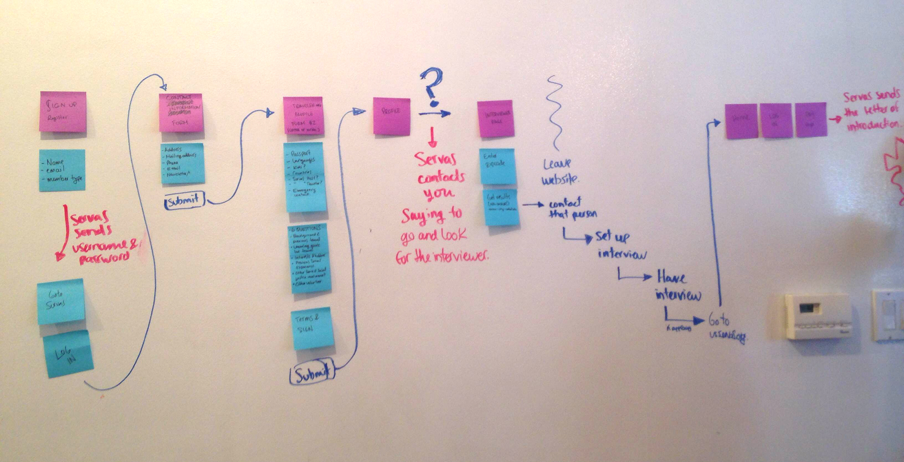
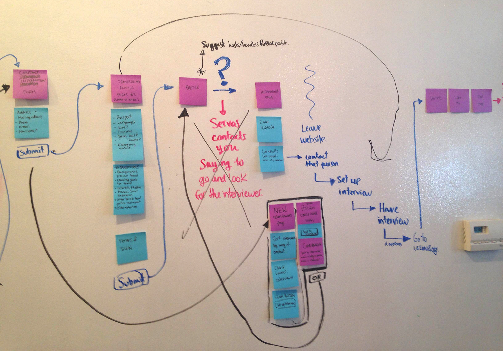
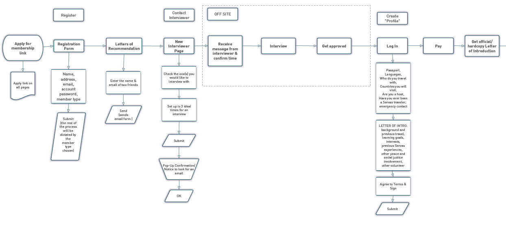
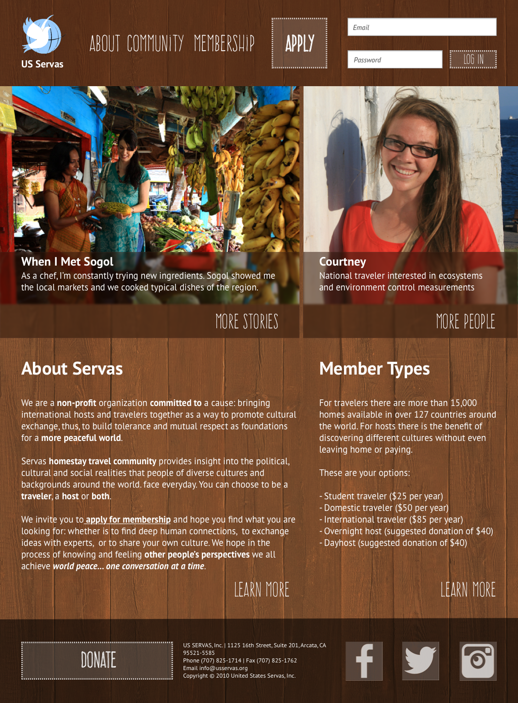
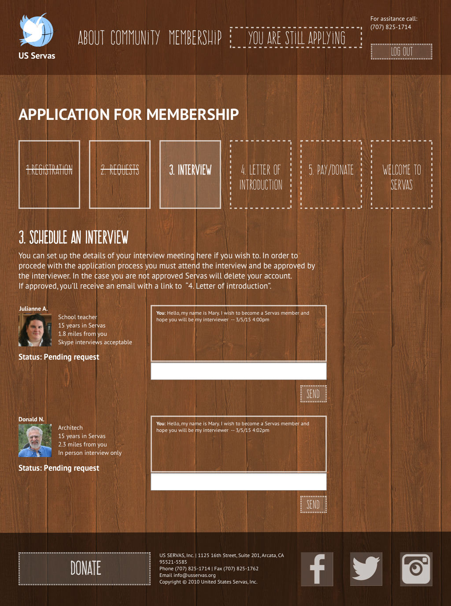

Servas
Engaging younger audiences by minimizing offline procedures and text-heavy content
View PrototypeSummary
Problem The website is out-dated, text-heavy with no good IA nor clean copy. Young tech-savy people can’t understand what Servas is by reading the website. Even if they do understand and like it, they do not feel encouraged to apply. This is because the process is long and inconvenient. e.g.: It requires to send several paper forms through postal mail and wait for responses.
Proposal Younger audiences want to feel excited about traveling and meeting new people. A way to achieve this is by focusing on images of people&places and providing a short copy and simple nav. Thus the entire website needed to change. We divided the application process into visible steps. We offered solutions to cut offline procedures as much as possible.
Role
UX researcher and designer:
•Sole Interviewer, Research Insights, Personas
•Scenarios, Strategy + User flow (co)design, Sketches, Interface (co)design
•Wireframes, Visual Design and wireframe notations with Interaction Design instructions.
Context
ABOUT SERVAS & THE PROJECT Servas is a non-profit that promotes peace and mutual respect through cultural exchange. They want to expand their message to younger audiences and fix the application process. Visit their current website. Challenges Servas is an international organization so many of the procedures cannot be changed. Low budget to build the changes. Dealing with large age ranges between users
Results This project allowed Servas to request around $20000 in donations to rebuild their website. Timeline 2 weeks and a half as UX designers/consultants of UXDi course at General Assembly Spring 2014 Team Jennifer Clyde
Process
1. Research
- Survey (Jennifer)
- Interviews + Insights
- Competitive Analysis (J)
- Content Inventory (J)
- Research synthesis (w/J)
- Personas
2. Ideation
- Scenarios
- Strategy (w/J)
- User Flows (w/J)
- Sitemap (J)
- Interface Sketching
- Design definition (w/J)
3. Prototyping
- Mood Boards
- Visual Design
- Wireframes+Content
- Marvel Prototype (J)
- User testing
- Iterations (w/J)
4. Presentation
- Sitemap and user flow images (J)
- Presentation Deck (J)
- Client Presentation (w/J)
- Wireframe Notations with design instructions for content, looks and behavior of the interface
1. Research
Insights we kept in mind when designing a solution:
•Younger people (18-35) in the US are active internet users. They expect certain dynamics involving web-related services.
•Younger audiences want to feel excited about traveling and meeting new people. They want to feel inspired.
•Current members expect new members to be concern with social issues and curious about people and the world.
User Interviews with potential members showed us that people came to expect the following:
•Viewable member profiles with pictures and interests
•More pictures and stories of visits on the website
•A clear and straightforward sign-up process
•To know that all members have been verified and also to see other member feedback/reviews
•To communicate with other members on the website
Personas
These personas are the synthesis of the interviews. I divided and grouped the information across several variables. These following variables: goals, purpose for joining, member type, tech-savy-ness, and trust in strangers. Then, I gave each group the personality traits of the correspondent people interviewed. The main persona is Jess because she can travel but can't host people. These are the kinds of travelers that are more convenient for Servas.
2. Ideation
Sitemap
The research results were clear on what kind of features we needed to include. Thus we created a strategy according to it. We agreed to make a simple 2 levels nav. We chose and tested the labels together. My partner made a file to explain the location of each webpage and its content.
User Flows
We also knew what parts of the procedure should be out of the application process. Many of them had to stay, but we managed to make the process less exhausting by relying on the digital platform. We used scenarios to figure out what our users would do instead.
For example: the current process requires 2 letters of recommendation from friends. Applicants must print a form, send it through postal mail to 2 friends, let them fill it and send back so you can send all papers together. Our users would just call their friends for a favor. Yet, Jess would feel embarrassed to put them through so much trouble. So in our solution you only need to give 2 names and emails and tell your friends about it. Servas will send a short digital form via email.
Current user flow analysis
Designing the new user flow
Proposed user flow

Interface sketching and design definition
We based the interface design in my sketches, which I based on our previous decisions. The sketches were clear enough to help us ask other people for their opinion and make changes on the spot.


3. Prototyping
Mood Boards and Visual Design
I created moodboards that integrated the Servas' identity and the user's imagery of traveling and source of inspiration. Thus, there were 3 big themes:
1. Earthly-dream: imagery from the globetrotter and curious about people side of the travelers. The best match for Servas.
2. Earthly-visionary: imagery from the peace making and volunteer side of the committed travelers.
3. Dream-Remembrance: imagery from the romantic wanderlust side of the younger travelers.
Wireframes, Prototype and User Testing
I used elements of the visual mood boards to make the visual design of the interface. My partner used the wireframes I did in Illustrator for the Marvel app prototype. We then proceeded to recruit current young members to test our solution. They could appreciate the difference with the current website and approved the general approach to the problem. However, there were still details in usability and specific UI patterns that needed revision. We iterated until it was time to stop.
Wireframe: home page
Wireframe: pending interview request page
4. Presentation
Presentation to Client
We first delineated what the project goals were. Continue to explain how we did the research, its purpose and its results. We explained our analysis of the problem according to it and our strategy to solve the issue. Then we explained in detail the changes in the UI to accomplish the strategy, priorities in such changes and next steps.
Response
Our client understood the changes were necessary. They worried about money to put them in place and all the bureaucratic decisions for approval. But they felt encouraged and excited to do it. In general, they were satisfied with our work. The following recommendation from my LinkedIn profile proves the results.
"Diana was part of a 2 member team to help suggest a complete redesign of the US Servas website, usservas.org. The suggested redesign was so clear and powerful that the US Servas board was energized to fund a full blown redesign based on her vision for a new US Servas website"
– Recommendation by Mary Jane Mikuriya
Peace Secretary, Key Person Committee, N Calif. Regional Coordinator, Interviewer at U S Servas
dianage.dna@gmail.com
+1 415 533 97 06
When I'm not working I do all kinds of things and I keep record of them in my networks.


Designed and Coded by Diana Galvis © 2015